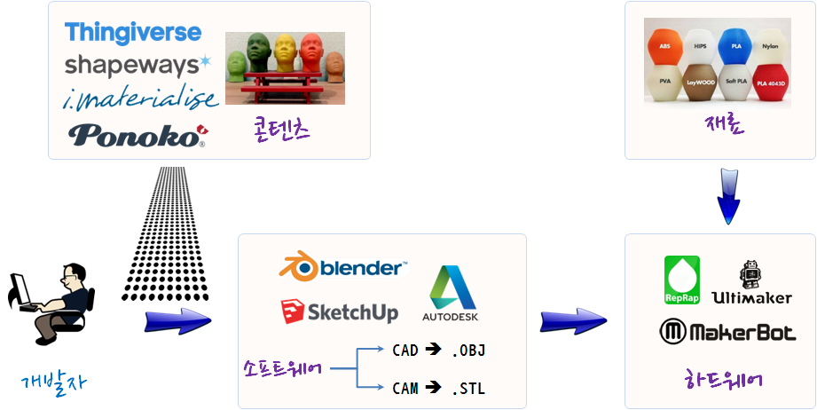
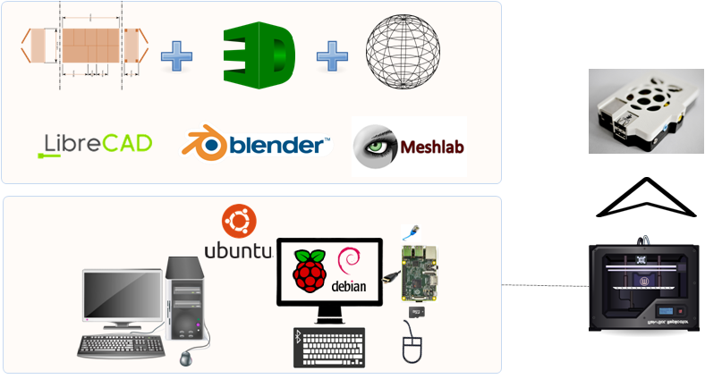

xwMOOC 컴퓨터
컴퓨터 지원 설계(CAD) 활용 xwMOOC 오픈 컴퓨터 설계
학습 목표
- $100 달러 오픈 컴퓨터 CAD 설계
- $100 달러 오픈 컴퓨터 CAD 설계파일 3D 프린팅
1. 3D 프린팅 생태계
3D 프린터를 사용해서 원하는 설계한 것을 3D 객체로 출력하려고 한다면 설계 구상에서부터 3D 출력까지 여러 단계를 거치게 된다.

- 콘텐츠(Contents): 무료, CC 라이선스 혹은 유료로 3D 프린터를 통해 다양한 3D 콘텐츠를 얻을 수 있다.
- 소프트웨어(Software): 원, 실린더, 직육면체 등 기본 3D 객체로부터 3D 캐드 소프트웨어를 활용하여 출력하고자 하는 3D 객체를 제작해 나가거나
Thingiverse나Shapeways등에서 얻은 파일을 본인의 목적에 맞춰 변경한다. - 3D프린터(Hardware): 디자인과 설계를 맞춘 3D 객체를 얻기 위해서 3D 프린터가 필요하다.
- 재료(Material): 3D 프린터에 다양한 재료를 넣어 동일한 3D 객체를 다양한 모양과 특징을 갖는 물건을 출력하는 소재.
2. $100 달러 컴퓨터 기구물 제작
$100 달러 컴퓨터 본체 기구물 제작 과정은 다음과 같다. $100 달러 컴퓨터는 라즈베리 파이 2 플랫폼을 사용한다.
- 3D 캐드 소프트웨어를 설치한다.
- 라즈베리 파이 2 본체 기구물 설계파일을 검색한다.
- 다운로드 받은 설계파일을 목적에 맞게 수정하여 저장한다.
- 3D 프린터로 출력한다.
2.1. 캐드 소프트웨어 툴체인 설치
컴퓨터 지원 설계(Computer-Aided Design, 캐드, CAD) 공학자, 건축가, 설계 활동에서 전문적인 설계를 지원하는 컴퓨터 기반 도구의 다양한 영역에서 사용되는데 최근에는 일반인도 3D프린터 보급과 함께 많이 활발히 사용되고 있다.

$100 달러 컴퓨터 하드웨어 설계를 위해 필요한 캐드 소프트웨어는 다음과 같다.
- 2D 캐드 설계 : 리브레캐드(LibreCAD)
- 3D 캐드 설계 : 블렌더(Blender)
- 3D 프린터 출력 매쉬작업 : 메쉬랩(MeashLab)
우부투 기반으로 apt-get 팩키지 설치 관리자를 통해서 설치를 간단히 할 수 있다.
$ sudo apt-get update
$ sudo apt-get install meshlab
$ sudo apt-get install librecad
$ sudo apt-get install blender컴퓨터 설계 소프트웨어
- 공개 캐드 소프트웨어
- 상용 캐드 소프트웨어
- 자동차 분야
2.2. 라즈베리 파이 2 본체 기구물 설계파일 검색
3D 설계파일 공유가능한 웹사이트는 기본적으로 마켓플레이스 속성도 가지고 있다. 3D 설계작업을 한 엔지니어, 설계자, 디자이너가 웹사이트를 통해서 상업으로 혹은 공유 목적으로 다양한 웹사이트에 올리고 있으며, 많은 사용자가 이를 검색하고 다운로드 받아 활용하고 있다.
아다프루트(Adafruit)에 라즈베리 파이 본체 기구물을 3D 프린터로 출력할 수 있는 방법을 ’15년 5월 인터넷에 공개했다. 라즈베리 파이 본체 기구물을 3D 프린터로 찍는 방법은 다음과 같다.
아다프루트 및 xwMOOC 준비물
- 3D 프린터 및 PLA/ABS 필라멘트
- 라즈베리 파이 2 (모델 B+)
- 4-40 x 1/2 IN Flat Phillips
2.3. $100 달러 오픈 컴퓨터 3D 디자인
구글 스케치업과 함께 오토데스크 제품도 캐드 디자인에 많이 사용되고 있는데 오토데스크 123D (AutoDesk 123D Design)로 설계하고, 오토데스크 메쉬믹서(Meshmixer) 프로그램도 함께 설치하여 3D 프린터로 출력한다. 웹기반으로 3D 캐드 디자인을 할 수 있는 소프트웨어도 있다. 오토데스크 팅커캐드(AutoDesk TinkerCAD)를 사용해서 웹브라우져에서 쉽게 3D 설계작업을 수행할 수 있다.
$100 달러 오픈 컴퓨터
- $100 달러 오픈 컴퓨터 설계 원본 : $100 달러 컴퓨터 3D 설계파일
- 오토데스크 123D로 설계작업 (xwMOOC 여름학기 인턴 이호성군 설계)
- $100 달러 오픈 컴퓨터 3D 애니메이션
2.4. 라즈베리 파이 본체 3D 설계
- 라즈베리 파이 2 모델 B+ 설계 도면
라즈베리 파이 재단 웹사이트에 NEW PRODUCT LAUNCH! INTRODUCING RASPBERRY PI MODEL B+ 라즈베리 파이 2 모델 B+ 설계도면 및 GPIO 다이어그램이 공개되어 있다.
- 라즈베리 파이 2 모델 B+ STEP 및 STL 파일
라즈베리 파이 2 모델 B+ 자체 3D 설계 STEP 및 STL 파일이 Thingiverse Raspberry Pi Model B+ PCB Assembly with major components 웹사이트에 공개되어 있다. CC 라이선스는 CC:BY-SA다.
- 라즈베리 파이 2 본체 기구물 3D 설계 파일 STL 파일 뿐만 아니라
.123dx확장자를 갖는 오토데스크 123D 파일도 Thingiverse Raspberry Pi B+ Face Case 웹사이트에 공개되어 있다. 오토데스크 캐드 소프트웨어로 원하면 변경도 가능하다. 단, CC 라이선스가 CC:BY-SA라서 동일조건으로 공개해야만 된다.
2.5. 라즈베리 파이 본체 3D 프린터 출력
- 3D 프린터 출력소재
- PLA를 추천하지만, ABS도 좋다.
- 출력대상 파일 : (윗면)piplus-top.stl, (바닥면)piplus-bottom.stl, (치아)piplus-teeth.stl
- 3D 프린터 출력 환경설정
- @230 PLA
- 15% Infill
- 0.2 Layer Height
- 2 Shells
- 90/120 Speeds
- 출력시간: 약 2 시간
2.6. 라즈베리 파이 본체 조립
- 치아부품(piplus-teeth.stl)을 윗면부품(piplus-top.stl)에 본드를 사용해서 붙인다.
- 바닥면부품(piplus-bottom.stl)에 라즈베리 파이 2를 넣는다.
- 바닥면부품(piplus-bottom.stl)에 4-40 평평한 필립스 나사못을 박는다.
- 바닥면과 윗면을 붙이고 나사를 조인다.